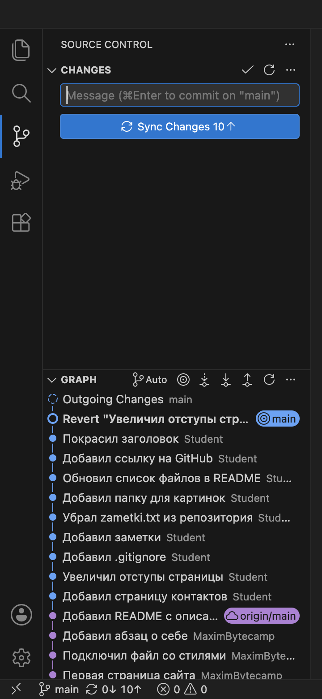
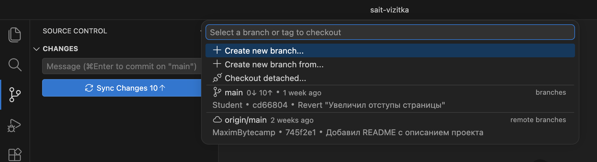
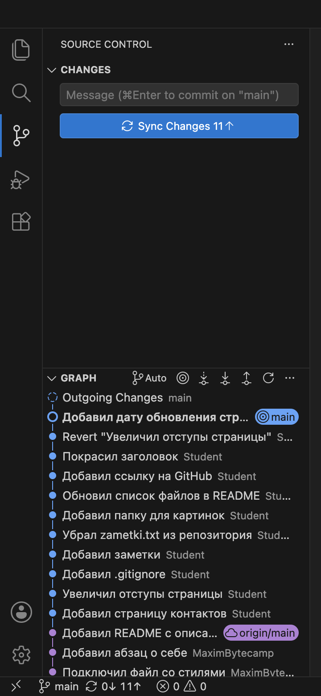

Справочник по Git и GitHub · модуль 3 · ветки
Глава 3.1
Ветки:
зачем нужны и как устроены
В главе разобрано, что такое ветка в Git, для чего ветки заводят и как Git их хранит. На проекте sait-vizitka показано, где в VS Code видно имя ветки, в каком файле оно записано и как ветка сдвигается при коммите. Создание веток и переключение между ними разобраны в главе 3.2.
- Категория
- Ветки
- Уровень
- Начальный
- Что получится
- Понимание, что такое ветка, HEAD и чем
mainотличается отorigin/main - Сколько занимает
- Около двадцати минут за компьютером
§1Зачем нужны ветки
В модуле 2 история проекта была одной цепочкой: каждый новый коммит вставал после предыдущего. Такой порядок подходит, пока в проекте идёт одна работа. Когда работ две, их коммиты в одной цепочке перемешиваются, и незаконченная работа попадает в проект вместе с готовой.
Ветка — отдельная линия коммитов внутри одного репозитория. Коммиты одной ветки не попадают в другую, пока ветки не объединят. Папка проекта при этом одна: Git показывает в ней файлы той ветки, на которой вы стоите.
Зачем это нужно в работе
- Новая страница и работающий сайт. Форму обратной связи делают несколько дней. Её коммиты лежат в отдельной ветке, а основная линия остаётся в рабочем состоянии.
- Срочное исправление. Во время работы над формой на сайте нашли опечатку. Её исправляют в основной линии, незаконченная форма в это исправление не попадает.
- Пробный вариант. Новое оформление пробуют в отдельной ветке. Если вариант не подошёл, ветку удаляют, основная линия не меняется.
- Несколько участников. Каждый ведёт свою задачу в своей ветке. Готовую задачу проверяют и объединяют с основной линией.
В проекте sait-vizitka ветка уже есть. Она называется main, и все коммиты модуля 2 сделаны в ней. В этой главе на ветке main разбирается, как Git хранит ветку. Вторая ветка создаётся в главе 3.2.
В главе используется проект sait-vizitka в том виде, в каком он остался после главы 2.6: четырнадцать коммитов, десять из них на GitHub не отправлены. Имена коммитов, сделанных вами, будут отличаться от показанных.
§2Шаг 1. Найти имя ветки в VS Code
Имя ветки, на которой вы стоите, VS Code показывает в строке состояния, в графе и в подсказке поля сообщения.
Открываем проект и панель Source Control: CtrlCmd + Shift + G.

main стоит в строке состояния внизу слева и в графе у верхнего коммита. Подсказка в поле сообщения тоже называет ветку: commit on "main".Строка состояния показывает ветку, на которой вы стоите. Метка в графе показывает коммит, которым эта ветка заканчивается. В главе 2.4 main называлась меткой. Её точное название — ветка.
То же в терминале (Ctrl + `):
git branch --show-current
main
Что получилось.Имя текущей ветки main найдено в строке состояния, в графе и в ответе команды.
§3Шаг 2. Открыть список веток
В репозитории может быть несколько веток. Список веток открывается из строки состояния.
Нажимаем на имя main в строке состояния. Вверху окна открывается список:

main в группе branches и origin/main в группе remote branches.| Строка списка | Что это |
|---|---|
| Create new branch… | Команда создания ветки. Используется в главе 3.2 |
main, группа branches | Ветка на вашем компьютере. Под именем указаны автор, имя и сообщение её последнего коммита |
origin/main, группа remote branches | Запись о ветке main в копии проекта на GitHub. Её последний коммит — «Добавил README с описанием проекта» |
Список закрываем клавишей Esc, ничего не выбирая. То же в терминале:
git branch -a
* main
remotes/origin/HEAD -> origin/main
remotes/origin/main
Команда git branch без ключа печатает только ветки на компьютере, с ключом -a — ещё и записи о ветках сервера. Звёздочка отмечает ветку, на которой вы стоите. Строка remotes/origin/HEAD -> origin/main сообщает, какая ветка на сервере считается главной.
Что получилось.В репозитории одна ветка на компьютере, main, и одна запись о ветке сервера, origin/main.
§4Шаг 3. Найти файл ветки
Ветка хранится в папке .git как небольшой файл. Найдём его.
В терминале выводим содержимое папки, в которой Git хранит ветки:
ls .git/refs/heads
main
В папке один файл, и он называется так же, как ветка. В PowerShell ответ выглядит как таблица, имя файла в ней то же. Читаем файл:
cat .git/refs/heads/main
cd668045e081279c0fc52e58236a16491577a258
В файле одна строка из сорока символов. Так выглядит полное имя коммита, оно разобрано в главе 2.4. Сравниваем с последним коммитом проекта:
git log --oneline -1
cd66804 Revert "Увеличил отступы страницы"
Первые семь символов совпадают: в файле ветки записан последний коммит.
Так Git хранит любую ветку: ветка записана как имя, за которым стоит один коммит, последний в линии. Остальные коммиты ветки в файле не перечислены. Git находит их по цепочке: в каждом коммите записано имя предыдущего. На странице коммита в главе 2.4 эта запись показана строкой 1 parent.
main указывает на один коммит — последний. Остальные Git находит по цепочке.Где в папке .git записаны ветки
При служебной упаковке репозитория Git переносит записи о ветках из отдельных файлов в один общий файл .git/packed-refs. Тогда команда cat сообщит, что файла нет. Имя коммита ветки в любом случае показывает команда git rev-parse main.
Что получилось.Найден файл .git/refs/heads/main. В нём записано имя последнего коммита ветки.
§5Шаг 4. Прочитать запись HEAD
Веток может быть несколько, а стоите вы всегда на одной. Какая ветка текущая, Git записывает в файле HEAD.
cat .git/HEAD
ref: refs/heads/main
В файле записан путь к файлу ветки из шага 3. HEAD — запись о том, на какой ветке вы стоите. По ней VS Code выводит имя ветки в строке состояния, а команда git branch ставит звёздочку.
HEAD записано имя ветки, в ветке — имя коммита. По этим двум записям Git определяет коммит, на котором вы стоите.В главе 2.6 запись HEAD в командах означала коммит, на котором вы стоите. Git находит его в два шага: читает в HEAD имя ветки, затем в файле ветки имя коммита. Запись HEAD~ означает коммит перед ним.
Что получилось.В HEAD записано ref: refs/heads/main: текущая ветка — main.
§6Шаг 5. Сделать коммит и проверить ветку
В файле ветки записан последний коммит. Проверим, что происходит с этой записью, когда появляется новый коммит.
В index.html под ссылкой на контакты добавляем строку:
<p><a href="kontakty.html">Контакты</a></p> </body>
<p><a href="kontakty.html">Контакты</a></p> <p>Страница обновлена в октябре 2026 года.</p> </body>
Сохраняем файл, отбираем его плюсом и делаем коммит с сообщением «Добавил дату обновления страницы». То же в терминале:
git add index.html git commit -m "Добавил дату обновления страницы"

main перешла на новый коммит. Коммит revert, у которого она стояла, теперь вторая строка графа. На кнопке 11↑.Читаем оба файла ещё раз:
cat .git/refs/heads/main 82fd14a052d87f56416c01e19570b560b6e7a884 cat .git/HEAD ref: refs/heads/main git log --oneline -2 82fd14a Добавил дату обновления страницы cd66804 Revert "Увеличил отступы страницы"
В файле ветки теперь имя нового коммита. Запись в HEAD осталась прежней: ветка та же, изменился её последний коммит.
82fd14a записал cd66804 как предыдущий. Имя main сдвинулось на него, запись в HEAD не менялась.При каждом коммите Git делает два действия. Создаёт коммит, в котором предыдущим записан коммит из файла текущей ветки. Затем записывает в файл ветки имя нового коммита. Ветка сдвигается на один коммит вперёд.
Команды главы 2.6 меняли этот же файл. git reset HEAD~ записывает в файл ветки имя предыдущего коммита, поэтому последний коммит пропадает из графа. Сам коммит при этом не удаляется, и его находит git reflog.
Что получилось.После коммита в .git/refs/heads/main записан новый коммит 82fd14a, в проекте пятнадцать коммитов.
§7Шаг 6. Сравнить main и origin/main
В списке шага 2 была вторая строка, origin/main. Сравним её с веткой main.
git branch -a -v
* main 82fd14a [ahead 11] Добавил дату обновления страницы
remotes/origin/HEAD -> origin/main
remotes/origin/main 745f2e1 Добавил README с описанием проекта
Ключ -v добавляет к каждой ветке имя и сообщение её последнего коммита.
| Запись | Где ведётся | Последний коммит | Когда сдвигается |
|---|---|---|---|
main | На вашем компьютере | 82fd14a, сделан в шаге 5 | При каждом вашем коммите, amend, reset и revert |
origin/main | На вашем компьютере, как запись о сервере | 745f2e1, получен при клонировании | Только при обмене с GitHub |
origin/main — запись о том, на каком коммите ветка main была на GitHub при последнем обмене. Обмена после клонирования не было, поэтому запись стоит на том же коммите, что в главе 2.2. Ваши коммиты её не сдвигают.
Пометка [ahead 11] означает, что в ветке main одиннадцать коммитов, которых нет в origin/main. То же число стоит на кнопке Sync Changes и в строке состояния: 11↑. Отправка коммитов разобрана в модуле 4.
Что получилось.main стоит на коммите 82fd14a, origin/main — на 745f2e1. Между ними одиннадцать неотправленных коммитов.
§8Справка: что добавляет вторая ветка
Ветка — файл с именем одного коммита. Поэтому вторая ветка добавляет в репозиторий один файл в папке .git/refs/heads. В нём записан тот же коммит, на котором вы стоите.
| Что | При создании ветки |
|---|---|
| Файлы проекта | Не копируются. Папка проекта одна |
| Коммиты | Не копируются. Обе ветки ведут к одним и тем же коммитам |
Папка .git/refs/heads | Появляется второй файл из сорока одного символа: имя коммита и перевод строки |
Запись HEAD | Меняется, когда вы переходите на другую ветку |
Ветки начинают различаться после первого коммита. Новый коммит сдвигает только ту ветку, которая записана в HEAD. Вторая ветка остаётся на прежнем коммите:
HEAD записана ветка forma-kontaktov. Её имя перешло на новый коммит, имя main осталось на 82fd14a.Если затем перейти на main и сделать коммит там, сдвинется main. У каждой ветки появляется свой последний коммит, а общая история заканчивается на 82fd14a:
forma-kontaktov в main не входит, коммит ветки main не входит в forma-kontaktov.Ассоциация: закладки в тетради
В тетради с записями лежит закладка на последней исписанной странице. Тетрадь одна. Закладка ничего не содержит, она отмечает место. Вторая закладка не добавляет в тетрадь страниц.
Коммиты — страницы, ветка — закладка на последнем коммите. Вторая ветка — вторая закладка: коммиты остаются те же, добавляется одна запись в .git/refs/heads. HEAD отмечает закладку, которой вы сейчас пользуетесь.
Где не совпадаетЗакладку передвигают рукой, а ветка сдвигается сама при каждом коммите. В тетради после страницы идёт одна следующая, а в Git после одного коммита могут идти два разных: по одному в каждой ветке.
§9Справка: имена веток
Имя первой ветки задаёт настройка init.defaultBranch из главы 1.3, в этом курсе это main. Остальным веткам имя даёт тот, кто их создаёт. Имя ветки становится именем файла, поэтому на него действуют ограничения:
| Правило | Подходит | Не подходит |
|---|---|---|
| Латинские буквы, цифры, дефис | forma-kontaktov | форма контактов: кириллица неудобна в командах, пробел запрещён |
| Имя называет задачу | temnaya-tema | proba2, new: по имени не видно, что в ветке |
| Косая черта делит имя на группу и задачу | fix/opechatka-v-kontaktah | fix/: имя не может заканчиваться косой чертой |
| Без служебных знаков | stranica-proektov | Имена с ~, ^, :, ?, *, двумя точками подряд или с дефисом в начале |
Ветку main Git обрабатывает так же, как остальные. Главной её считают потому, что в ней держат проверенное состояние проекта и GitHub показывает её на странице репозитория по умолчанию.
В проектах этого курса имя main менять нельзя. Команда переименования в Git и в VS Code есть, но она меняет имя только на вашем компьютере. На GitHub ветка по-прежнему называется main, и запись origin/main относится к ней. После переименования имена у вас и на сервере не совпадают, и отправка коммитов останавливается с ошибкой The upstream branch of your current branch does not match the name of your current branch. На имя main настроены и другие части проекта: страница репозитория, публикация сайта, проверки. Новым веткам имя выбирают свободно, main оставляют как есть.
§10Частые вопросы
.git/refs/heads.origin/main показывает, что сейчас лежит на GitHub.origin/main показывает, что было на GitHub при последнем обмене. Запись обновляется только при обмене с сервером.main — одно и то же.main — ветка, в ней записан коммит. В HEAD записано имя ветки, на которой вы стоите. Сейчас это main, после перехода на другую ветку запись изменится.§11Проверьте себя
Что записано в файле .git/refs/heads/main?
Полное имя одного коммита, сорок символов. Это последний коммит ветки main.
В ветке записан только последний коммит. Как Git показывает всю историю ветки?
В каждом коммите записано имя предыдущего. Git начинает с коммита из файла ветки и идёт по этим записям до первого коммита проекта.
Что изменится в папке .git после нового коммита в ветке main?
Появится новый коммит, и в файле .git/refs/heads/main будет записано его имя. Файл HEAD не изменится: в нём по-прежнему ref: refs/heads/main.
Команда cat .git/HEAD напечатала ref: refs/heads/main. Что это значит?
Вы стоите на ветке main. Новый коммит сдвинет эту ветку. То же имя показано в строке состояния VS Code.
В ответе git branch -a -v у ветки main стоит [ahead 11]. Что это значит?
В ветке main одиннадцать коммитов, которых нет в origin/main, то есть они не отправлены на GitHub. То же число показано на кнопке Sync Changes.
Сколько места займёт в репозитории новая ветка, созданная на текущем коммите?
Один файл из сорока одного символа в папке .git/refs/heads. Файлы проекта и коммиты не копируются.
§12Шпаргалка по главе
имя → последний коммит линии
файл в .git/refs/heads
запись о текущей ветке
файл .git/HEAD
строка состояния, слева внизу
метка в разделе GRAPH
щелчок по имени — список веток
git branch --show-current
git branch -a -v
git rev-parse main
cat .git/HEAD
cat .git/refs/heads/main
ls .git/refs/heads
main — ваша ветка
origin/main — запись о сервере
ahead N — не отправлено N
Итог главы
Ветка — отдельная линия коммитов в одном репозитории. Git хранит её как файл в папке .git/refs/heads, в котором записано имя одного коммита, последнего в линии. Остальные коммиты находятся по цепочке: в каждом записан предыдущий. В файле .git/HEAD записано имя ветки, на которой вы стоите. VS Code показывает его в строке состояния и меткой в графе. Новый коммит сдвигает текущую ветку: в её файл записывается имя нового коммита. origin/main — запись о ветке на GitHub, она сдвигается только при обмене с сервером. Вторая ветка добавляет в репозиторий один небольшой файл, файлы проекта и коммиты при этом не копируются. В следующей главе создаётся вторая ветка, и на ней проверяется, что её коммиты не попадают в main.
- Кадры и ответы команд получены на клоне проекта sait-vizitka в Git версии 2.51.1 и VS Code версии 1.138.
- Ветка как указатель на коммит, запись HEAD — книга Pro Git, раздел «О ветвлении в двух словах».
- Папки
refs/heads,refs/remotes, файлыHEADиpacked-refs— документация gitrepository-layout. - Ключи
git branch— документация git-branch; ограничения на имена веток — git-check-ref-format. - Имя ветки в строке состояния и список веток — документация VS Code, раздел Source Control.